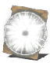

Descrição: Milagre que libera uma onda de choque local, tonteando inimigos e causando grande dano.
Pouco se sabe sobre as origens deste milagre, exceto que compartilha raízes com o feitiço Força. Faz menção a certos deuses, mas infelizmente seus nomes reais já foram há muito esquecidos
Localização:
Usos: 1
